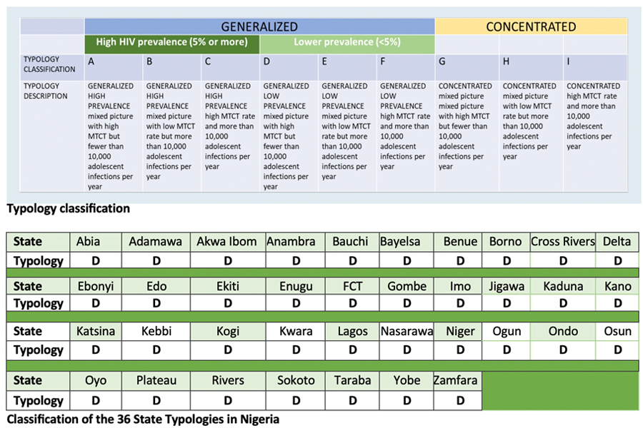

The National Paediatric and Adolescent HIV Service Delivery Framework (SDF) is an integral component of the National Acceleration Plan for Paediatrics and Adolescents HIV Treatment and Care (NAP), which is aimed at improving identification, linkage, treatment, retention, and viral suppression in children and adolescents infected with HIV in Nigeria.
The National-SDF was developed through a multi-layered process, informed by the UNICEF SDF, and harnesses available data to inform patient-centered programming for paediatric and adolescent HIV care. The National-SDF provides differentiated models of care for different age groups on specific interventions for testing, linkage, treatment options, and retention, ensuring patient-specific approaches rather than a 'one size fits all' model.
The National-SDF has nine typologies (Class A -I), which aims to guide states with age- specific strategies according to their respective typologies. The typologies will help to establish where the need is greatest along the continuum of care cascade
